UML (englisch Unified Modeling Language) ist eine standardisierte, grafische Sprache, um Software und Systeme zu modellieren - bevor man sie programmiert. Statt Text beschreibt man Anforderungen, Abläufe und Strukturen mit genormten Symbolen, die alle Beteiligten (Fachabteilung, Entwicklung, Kunde) gleich verstehen.
🎯
Prüfungsrelevanz: UML-Diagramme gehören in der AP1 zum Lernfeld Anwendungsentwicklung. Typische Aufgabe: einen beschriebenen Sachverhalt als Diagramm zeichnen oder ein Lückendiagramm vervollständigen. Dieses Modul nutzt durchgehend die IHK-Notation 2024 als Maßstab.
Struktur- vs. Verhaltensdiagramme
UML teilt sich in zwei Familien: Strukturdiagramme zeigen den statischen Aufbau (woraus besteht das System), Verhaltensdiagramme zeigen die Dynamik (was passiert, in welcher Reihenfolge).
🏗️ Struktur (statisch)
Klassendiagramm - der Bauplan: Klassen, ihre Attribute/Methoden und ihre Beziehungen zueinander.
⚙️ Verhalten (dynamisch)
Use-Case, Aktivität, Zustand, Sequenz - Anforderungen, Abläufe, Reaktionen und Nachrichtenaustausch über die Zeit.
🗂️ Die fünf Diagrammtypen dieses Moduls
Jeder Tab oben enthält die komplette Notation für einen Diagrammtyp, dazu (wo vorhanden) durchgezeichnete Beispiele und Übungen mit Lösung.
Anwendungsfalldiagramm Use-Case
Was soll das System können - aus Sicht der Nutzer (Akteure). Funktionen als Ovale, Beziehungen «include»/«extend». Blendet das Wie bewusst aus.
Aktivitätsdiagramm Activity
Wie läuft ein Prozess ab? Abläufe mit Aktionen, Verzweigungen, Parallelität und Schwimmbahnen - ähnlich einem Flussdiagramm.
Zustandsdiagramm State
Wie reagiert ein Objekt? Zustände und Übergänge, ausgelöst durch Ereignisse. Ideal für Benutzeroberflächen, Automaten, Statusmodelle.
Klassendiagramm Class
Woraus besteht das System? Klassen mit Attributen/Methoden und Beziehungen (Vererbung, Assoziation, Aggregation, Komposition).
Sequenzdiagramm Sequence
Wer schickt wem wann welche Nachricht? Zeitlicher Ablauf entlang von Lebenslinien, synchron/asynchron.
Pfeil-Cheatsheet Merke
Die Pfeilspitze trägt die Bedeutung. Im Use-Case und Klassendiagramm steckt der häufigste Fehler in der Pfeilrichtung - jeder Tab erklärt sie explizit.
📌
Lesetrick für alle UML-Pfeile: Lies den Pfeil als Satz vom Anfang zur Spitze und setze den Stereotyp/die Bedeutung dazwischen. Beispiel Use-Case: „Tür öffnen «include» Berechtigung prüfen" - der Pfeil zeigt also vom Basis-Anwendungsfall auf das eingebundene Verhalten.
👤 Anwendungsfalldiagramm (Use-Case)
Zeigt, was ein System aus Sicht seiner Nutzer leisten soll. Akteure (außerhalb des Systems) lösen Anwendungsfälle (Funktionen, innerhalb der Systemgrenze) aus. Das Wie der Umsetzung bleibt bewusst offen.
Komplette Notation
Akteur Actor
Strichmännchen. Ein Mensch oder ein externes System, das mit dem System interagiert - steht außerhalb der Systemgrenze.
Anwendungsfall Use-Case
Oval mit einer Funktion des Systems, beschriftet als Verb + Objekt (z. B. „Tür öffnen").
Systemgrenze Boundary
Rechteck um alle Anwendungsfälle. Trennt, was zum System gehört (innen), von den Akteuren (außen).
Assoziation nutzt
Durchgezogene Linie (ohne Pfeilspitze) zwischen Akteur und Anwendungsfall: „der Akteur nutzt diese Funktion".
Generalisierung ist ein
Linie mit leerem Dreieck zur Oberklasse. „Admin ist ein Mitarbeiter" - der Spezialakteur erbt alle Anwendungsfälle des Basisakteurs. Spitze zeigt zum Basisakteur.
«include» Pflicht
Gestrichelter Pfeil, offene Spitze, vom Basis-UC zum eingebundenen UC. Der Basisfall bindet ihn immer ein (ausgelagertes Pflicht-Verhalten).
«extend» optional
Gestrichelter Pfeil, offene Spitze, vom erweiternden UC zum Basis-UC - also andersherum als bei include. Das Verhalten kommt nur unter einer Bedingung hinzu.
Notiz / Extension-Point Bedingung
Blatt mit Eselsohr. Hängt an einer «extend»-Beziehung und nennt die Bedingung und den Erweiterungspunkt (z. B. „EP: Anmeldung").
Notations-Regeln
Akteure stehen außen, alle Anwendungsfälle innerhalb der Systemgrenze.
Zwischen Akteur und Anwendungsfall steht eine Assoziation (Linie ohne Pfeil).
«include»: Pfeil vom Basis-UC weg zum eingebundenen UC. Eselsbrücke: „Basis braucht immer dieses Stück".
«extend»: Pfeil zum Basis-UC hin. Eselsbrücke: „Sonderfall erweitert den Basisfall - aber nur manchmal".
Generalisierung (leeres Dreieck) gibt es zwischen Akteuren und zwischen Anwendungsfällen - 'ist eine Art von'.
IHK-Schreibweisen «include»/«includes» und «extend»/«extends» meinen dasselbe.
⚠️
Klassiker-Fehler: die «extend»-Pfeilrichtung verkehrt herum zeichnen. Merke: Der Pfeil zeigt auf den Anwendungsfall, der erweitert wird (den Basisfall) - nicht auf die Erweiterung.
Durchgezeichnetes Beispiel · Schlüsselsystem
Mitarbeiter können Tür öffnen und Tür schließen - beides bindet immer eine Berechtigungsprüfung ein («include»). Der Administrator ist ein Mitarbeiter (Generalisierung) und kann zusätzlich Türschlösser programmieren (ebenfalls mit Berechtigungsprüfung).
Erst selbst auf Papier zeichnen, dann die Lösung aufdecken - ein Klick öffnet die komplette Musterlösung samt offiziellem Punkteschema.
Übung 1 · Gebäudemanagement (Sensoren)
Erstelle ein Anwendungsfalldiagramm:
Für Wartungsmitarbeiter fallen Wartungen und Kalibrierungen der Sensoren an. Für die Wartung ist ein Login erforderlich, falls dieser noch nicht erfolgt ist.
Administratoren können Sensordaten auswerten. Dazu müssen in jedem Fall Sensordaten gelesen werden. Falls noch nicht erfolgt, ist für die Auswertung ein Login erforderlich.
Jeder Mitarbeiter kann die Sensordaten auslesen.
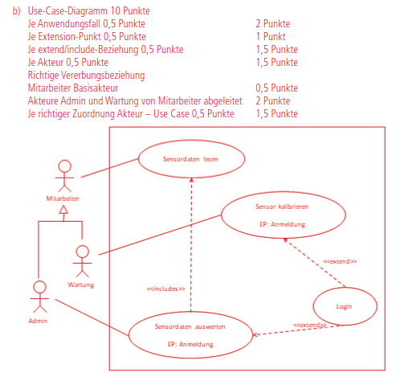
Akteure:Mitarbeiter (Basisakteur); Wartung und Admin sind davon abgeleitet (Generalisierung „ist ein Mitarbeiter").
Beziehungen: Mitarbeiter → „Sensordaten lesen". „Sensordaten auswerten" «include» „Sensordaten lesen" (Auswerten setzt Lesen voraus). „Sensor kalibrieren" und „Sensordaten auswerten" werden je per «extend» um „Login" ergänzt (EP: Anmeldung, nur falls noch nicht eingeloggt).
Je Anwendungsfall0,5
Je Extension-Punkt0,5
Je include/extend-Beziehung0,5
Akteure Admin & Wartung von Mitarbeiter abgeleitet2
Mitarbeiter können eine Aktionärsversammlung einrichten und Aktionäre einladen. Beim Einladen wird eine Einladungsmail versendet. Außerdem können sie eine Übersicht zum Status der Einladungen einsehen.
Aktionäre können ihre Einladung abrufen und sich für eine Versammlung registrieren. Ist der Aktionär eingeladen, wird bei der Registrierung ein Zugangscode erzeugt.
Aktionäre können Dokumente einsehen. Sind diese nicht öffentlich, muss der Zugangscode eingegeben werden.
Alle Besucher können allgemeine Informationen abrufen (Leistungs-/Produktportfolio, AGB).
Ein Kunde kann Reservierungsanfragen stellen sowie buchen und stornieren.
Von einem Neukunden werden zunächst die Kundendaten erfasst. Für Buchung und Stornierung muss sich der Kunde einloggen.
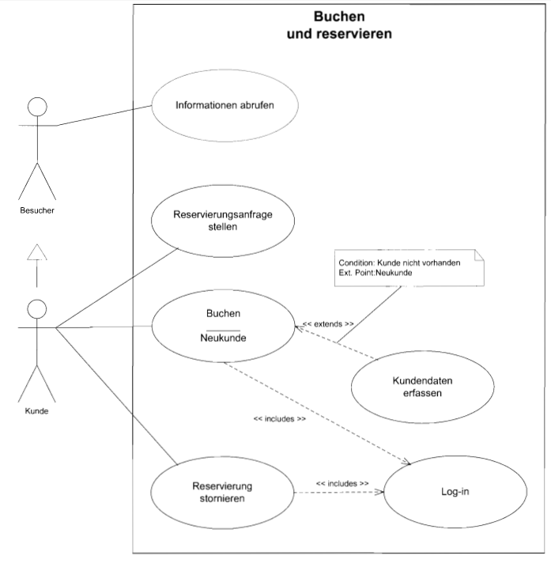
Akteure:Besucher (Basis) und Kunde (ist ein Besucher → Generalisierung).
Beziehungen: „Buchen" «extend» „Kundendaten erfassen" (Condition: Kunde nicht vorhanden, EP: Neukunde). „Buchen" und „Reservierung stornieren" je «include» „Log-in" (Login ist Pflicht).
Übung 4 · Helferlein e.V. (Webanwendung)
Erstelle ein Anwendungsfalldiagramm:
Mitglieder können ihre persönlichen Daten verwalten (Login falls nötig) und eine Dienstleistung buchen; dazu müssen sie in jedem Fall Terminvorschläge abrufen (Login für die Buchung nötig).
Ein Administrator ist ein Mitglied, das zusätzlich Dienstleistungsarten verwalten kann (Login falls nötig).
Ein Gast kann Terminvorschläge abrufen und sich als Mitglied registrieren.
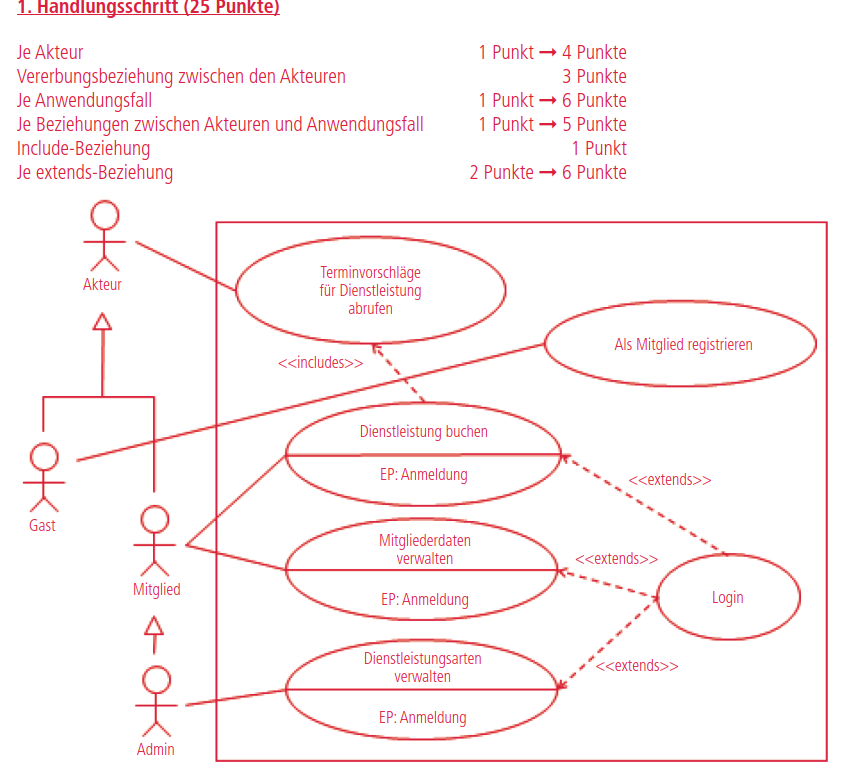
Akteur-Vererbung: Gast ← Mitglied ← Admin (jeder erbt die Anwendungsfälle des Basisakteurs).
Beziehungen: „Dienstleistung buchen" «include» „Terminvorschläge abrufen". „Dienstleistung buchen", „Mitgliederdaten verwalten" und „Dienstleistungsarten verwalten" werden je per «extend» um „Login" ergänzt (EP: Anmeldung).
Je Akteur1
Vererbung zwischen den Akteuren3
Je Anwendungsfall1
Je extend-Beziehung2
🔀 Aktivitätsdiagramm (Activity)
Zeigt, wie ein Prozess abläuft - die Reihenfolge von Aktionen, Verzweigungen (Entscheidungen) und parallele Abläufe. Es präzisiert die internen Abläufe hinter einem Anwendungsfall und ähnelt einem Fluss-/Programmablaufplan.
Komplette Notation
Startknoten Start
Gefüllter Kreis. Der eindeutige Beginn des Ablaufs; ein Pfeil führt zur ersten Aktion.
Endknoten Ende
Gefüllter Kreis mit Ring. Beendet die gesamte Aktivität. Es darf mehrere Endknoten geben.
Ablaufende Flow Final
Kreis mit X. Beendet nur den aktuellen Fluss - andere parallele Flüsse laufen weiter.
Aktion Aktivität
Abgerundetes Rechteck. Ein Arbeitsschritt im Ablauf. Pro Aktion genau ein Pfeil hinein und einer hinaus.
Kante Kontrollfluss
Pfeil mit voller Spitze. Gibt die Richtung des Kontrollflusses zwischen den Aktionen an.
Entscheidung Verzweigung
Raute - ein Weg hinein, mehrere hinaus. An jedem Ausgang steht eine eindeutige Bedingung in eckigen Klammern. Es geht nur ein Weg weiter.
Zusammenführung Merge
Raute - mehrere Wege hinein, einer hinaus. Führt alternative Wege wieder zusammen (z. B. nach einer Schleife). Keine Synchronisation.
Teilung Fork / Splitting
Dicker Balken - ein Weg hinein, mehrere hinaus. Alle Wege laufen ab da gleichzeitig (parallel).
Synchronisation Join
Dicker Balken - mehrere parallele Wege hinein, einer hinaus. Es geht erst weiter, wenn alle Wege fertig sind.
Schwimmbahnen Swimlanes
Spalten/Zeilen. Ordnen jede Aktion einem Verantwortungsbereich zu (Akteur/System) - 'wer macht was'.
Konnektor Verbinder
Kreis mit Buchstabe. Verbindet zwei Stellen, ohne eine Linie quer durchs Diagramm zu ziehen - zwei Konnektoren mit gleichem Buchstaben gehören zusammen.
Notations-Regeln
Zu/von einer Aktion führt immer nur ein Pfeil. Mehrere Wege gehen über Raute oder Balken.
Raute = Entscheidung (genau ein Weg, mit Bedingung). Balken = parallel (alle Wege gleichzeitig).
Jede Bedingung steht in [eckigen Klammern] am wegführenden Pfeil und muss eindeutig sein.
Was per Teilung (Fork) aufgespalten wird, sollte per Synchronisation (Join) wieder zusammengeführt werden.
Zu einem Endknoten dürfen - anders als bei Aktionen - mehrere Pfeile führen.
Endknoten (Auge) = alles beenden; Ablaufende (X) = nur diesen Fluss; Abbruch über das X-Symbol.
Durchgezeichnetes Beispiel · Raumbuchung
Ein Kunde stellt eine Anfrage (Zeitraum) - bei Verfügbarkeit beschreibt er die Anforderungen, die parallel geprüft werden (Raumbedarf ‖ Ressourcen). Aus der Synchronisation entsteht ein Angebot, das angenommen oder modifiziert wird. Die Notiz-Kästen erklären Raute, Synchronisationsbalken und die drei Endpunkt-Typen.
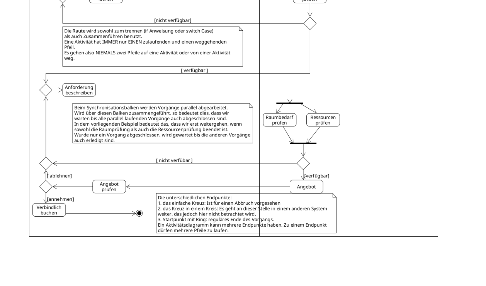
Quelle: Lehrmaterial „Das Aktivitätsdiagramm" · Schwimmbahnen + Verzweigung + Parallelisierung in einem Modell.
✍️ Übungen mit Lösung
Erst selbst zeichnen, dann die komplette Musterlösung aufdecken.
Übung 1 · Größte von drei Zahlen
Es werden 3 Zahlen eingegeben; als Ergebnis soll der größte Wert ausgegeben werden. Modelliere diesen Algorithmus als Aktivitätsdiagramm.
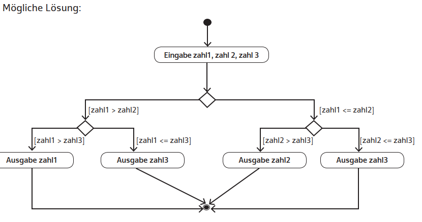
Idee: nach der Eingabe verschachtelte Verzweigungen: erst [zahl1 > zahl2] vs. [zahl1 <= zahl2], in jedem Zweig erneut gegen zahl3 prüfen. Die vier Ausgabe-Aktionen laufen am Ende über Zusammenführungen zum Endknoten.
Übung 2 · Facharbeiterausbildung (Lückendiagramm)
Trage die Buchstaben der Aktivitäten/Bedingungen in das vorgegebene Diagramm ein:
A Ausbildung starten · B Ausbildung beenden · C Lehrgänge besuchen · D nicht bestanden · E Schule besuchen · F Prüfung ablegen · G Facharbeiterzeugnis erhalten · H Versuche ≥ 3 · I zu Hause lernen · J bestanden · K Versuche < 3 · L Ausbildung nicht erfolgreich absolviert · M In Ausbildungsfirma arbeiten
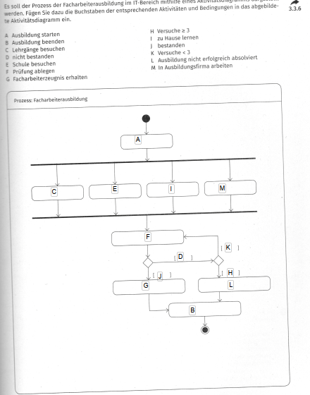
Ablauf:A (Start) → Teilung → parallel C, E, I, M → Synchronisation → F (Prüfung). Verzweigung: [J] bestanden → G → B (Ende); [D] nicht bestanden → Verzweigung [K] Versuche < 3 → zurück zu F; [H] Versuche ≥ 3 → L → B.
Wichtig: bei [Karte ungültig] und [PIN falsch] jeweils „Karte einziehen" → Ablaufende (X) = Abbruch. „Kontostand aktualisieren" und „Karte ausgeben" laufen parallel (Teilung/Synchronisation).
Übung 4 · Onlineshop-Bestellvorgang
Schwimmbahnen Kunde / Onlineshop. Der Kunde kann beliebig viele Artikel ansehen und in den Warenkorb legen (oder abbrechen), geht dann zur Kasse. Ein registrierter Kunde loggt sich ein, alternativ Bestellung als Gast (Adresse eingeben). Nach Wahl der Zahlungsart wird der Kaufauftrag erteilt; der Shop bestätigt, erstellt parallel Rechnung und verpackt die Ware, dann wird versendet.
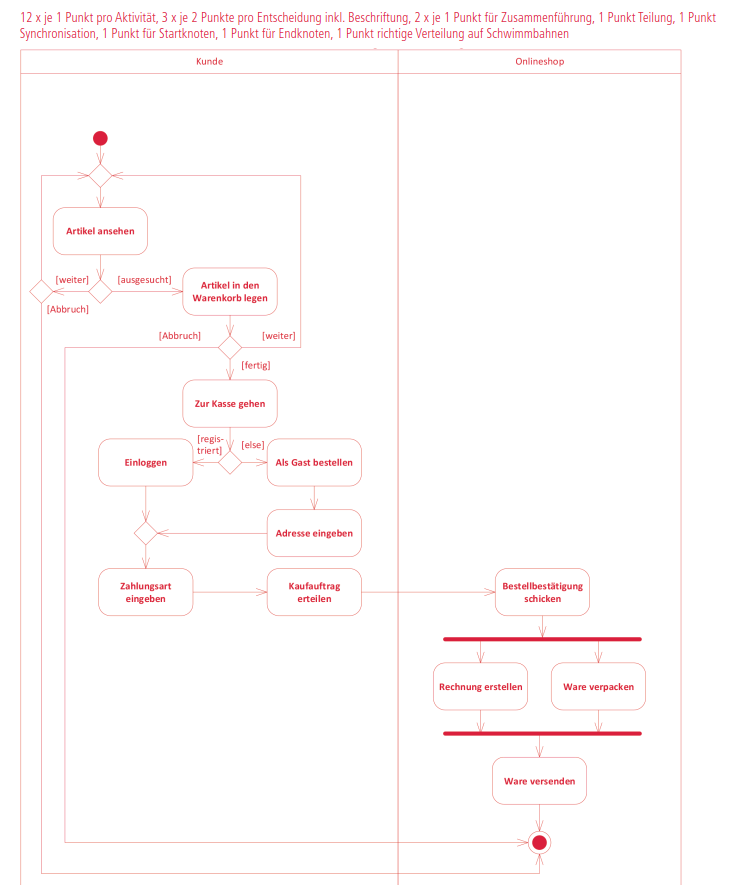
Schleifen: „Artikel ansehen" [weiter]/[ausgesucht] und „Warenkorb" [weiter]/[fertig]. Verzweigung[registriert] → Einloggen / [else] → Als Gast bestellen. Am Ende Teilung: „Rechnung erstellen" ‖ „Ware verpacken" → Synchronisation → „Ware versenden".
Je Aktivität1
Je Entscheidung inkl. Beschriftung2
Je Zusammenführung1
Teilung / Synchronisationje 1
Start-/Endknoten / Verteilung auf Schwimmbahnenje 1
Übung 5 · Einladung zur Aktionärsversammlung
Schwimmbahnen Mitarbeiter / Aktionär / System. Der Mitarbeiter versendet die Einladung parallel per Post und über die E-Service-Plattform. Hat der Aktionär E-Service-Zugang, meldet er sich an und wählt virtuelle oder Präsenzteilnahme; sonst sendet er die Anmeldung per Post (vom Mitarbeiter erfasst). Bei Präsenz reserviert das System einen Platz und versendet Platzkarte + Tagesordnung; bei virtueller Teilnahme die Zugangsdaten + Tagesordnung.
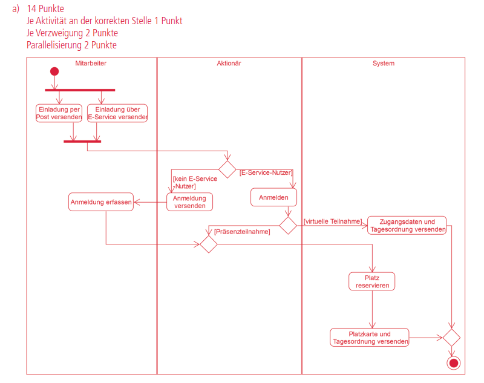
Parallelisierung beim Versand (Post ‖ E-Service). Verzweigungen: [E-Service-Nutzer]/[kein E-Service-Nutzer] und [Präsenzteilnahme]/[virtuelle Teilnahme].
Je Aktivität an der korrekten Stelle1
Je Verzweigung2
Parallelisierung2
Übung 6 · Kundenportal-Bestellung
Ein Kunde meldet sich an (bei Misserfolg erneut). Nach erfolgreicher Anmeldung gibt er eine Bestellung auf; parallel werden Zahlung und Lagerbestand geprüft. Sind beide Prüfungen erfolgreich, wird verpackt & versendet. Schlägt eine fehl, wird der Kunde benachrichtigt und gefragt, ob er es erneut versucht (ja → neue Bestellung, nein → Ende).
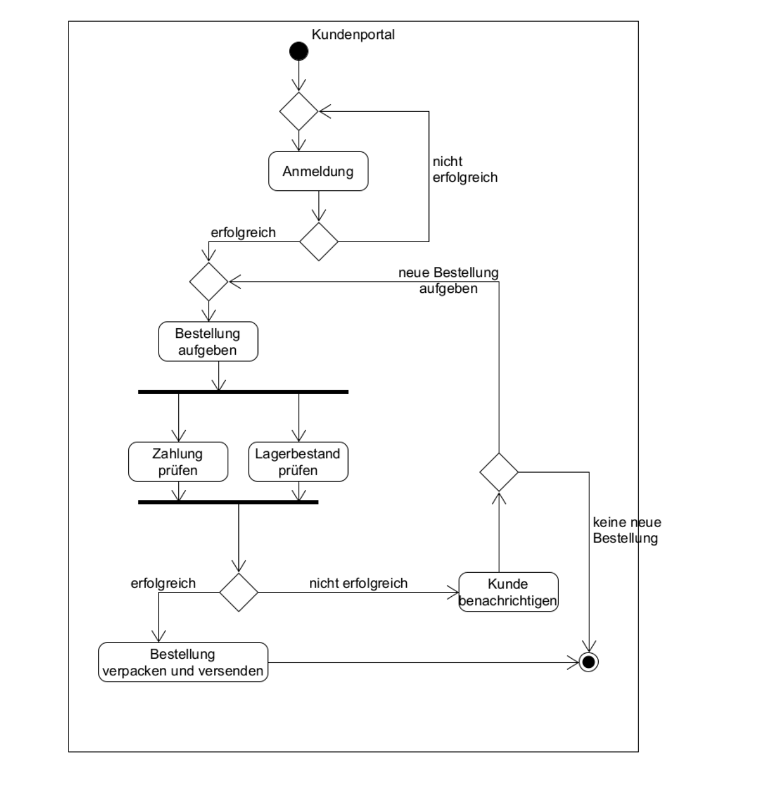
Zwei Schleifen (Anmeldung wiederholen, neue Bestellung) über Zusammenführungs-Rauten; die parallele Prüfung „Zahlung prüfen ‖ Lagerbestand prüfen" über Teilung/Synchronisation.
Übung 7 · Yachthafen – Liegeplatz mieten
Schwimmbahnen Kunde / Liegeplatz-Verwaltungs-App. Der Kunde fragt die Liegeplatzliste an, die App zeigt sie; er wählt einen Platz, die App prüft die Verfügbarkeit. Ist der Platz nicht verfügbar, wählt er einen neuen; sonst gibt er seine Daten ein und sendet sie. Nach dem Speichern wird gleichzeitig eine Bestätigungsmail verschickt und die Verfügbarkeit aktualisiert, dann endet der Prozess.
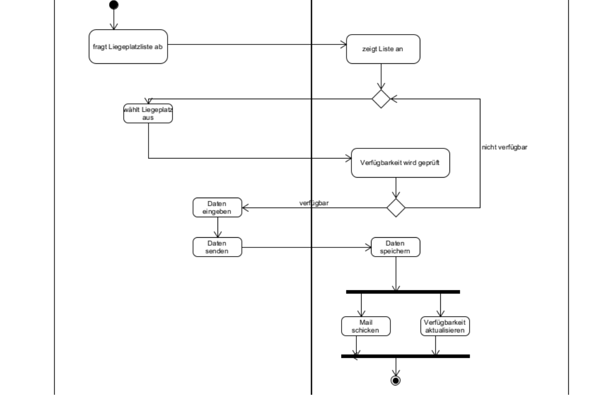
Schleife über die Verfügbarkeits-Verzweigung [nicht verfügbar] → zurück zur Auswahl; [verfügbar] → Daten. Am Ende Teilung/Synchronisation: „Mail schicken" ‖ „Verfügbarkeit aktualisieren".
🚦 Zustandsdiagramm (State)
Zeigt, wie ein Objekt reagiert: seine möglichen Zustände und die Übergänge (Transitionen) dazwischen, die durch Ereignisse ausgelöst werden. Während ein Aktivitätsdiagramm die Aktionen betont, betont das Zustandsdiagramm die Reaktionen - ideal für Oberflächen, Automaten und Statusmodelle.
Komplette Notation
Anfangszustand Start
Gefüllter Kreis. Der Startpunkt; ein Pfeil führt in den ersten (oft Ruhe-)Zustand.
Endzustand Ende
Gefüllter Kreis mit Ring. Das Objekt hat seinen Lebenszyklus beendet.
Zustand State
Abgerundetes Rechteck mit einer Situation im Leben des Objekts (z. B. „frei", „gesperrt").
Zustand mit Aktionen entry/do/exit
entry/ beim Betreten, do/ während des Verbleibs, exit/ beim Verlassen. Zusätzlich Reaktionen als ereignis/aktion.
Transition Übergang
Gerichteter Pfeil zwischen zwei Zuständen, beschriftet mit ereignis [bedingung] / aktion. Quelle und Ziel dürfen identisch sein (Selbstübergang).
Verzweigung Branch
Raute - je nach Bedingung wird ein anderer Zielzustand angenommen.
Zeitübergang after()
Transition mit after(Zeitdauer) - der Übergang erfolgt automatisch nach Ablauf einer Zeitspanne.
Notations-Regeln
Genau ein Anfangszustand; oft sinnvoll ist ein Ruhezustand, in den das Objekt nach Start/Reset zurückkehrt.
Eine Transition wird durch ein Ereignis ausgelöst; die Bedingung [guard] muss erfüllt sein, die Aktion wird ausgeführt.
Das Objekt kann ein Ereignis ignorieren oder darauf reagieren (Zustand wechseln und/oder Aktion ausführen).
Quell- und Zielzustand dürfen identisch sein (Selbstübergang).
Beschriftung der Transition: ereignis [bedingung] / aktion - alle drei Teile sind optional.
Durchgezeichnetes Beispiel · Raumbelegung
Ein Raum ist nach dem Anlegen frei. Er kann gesperrt werden (und die Sperrung wieder aufgehoben), oder per Anfrage in den Zustand angefragt wechseln. Angefragte Räume werden storniert (zurück zu frei) oder gebucht; nach der Veranstaltung wird der gebuchte Raum wieder freigegeben.
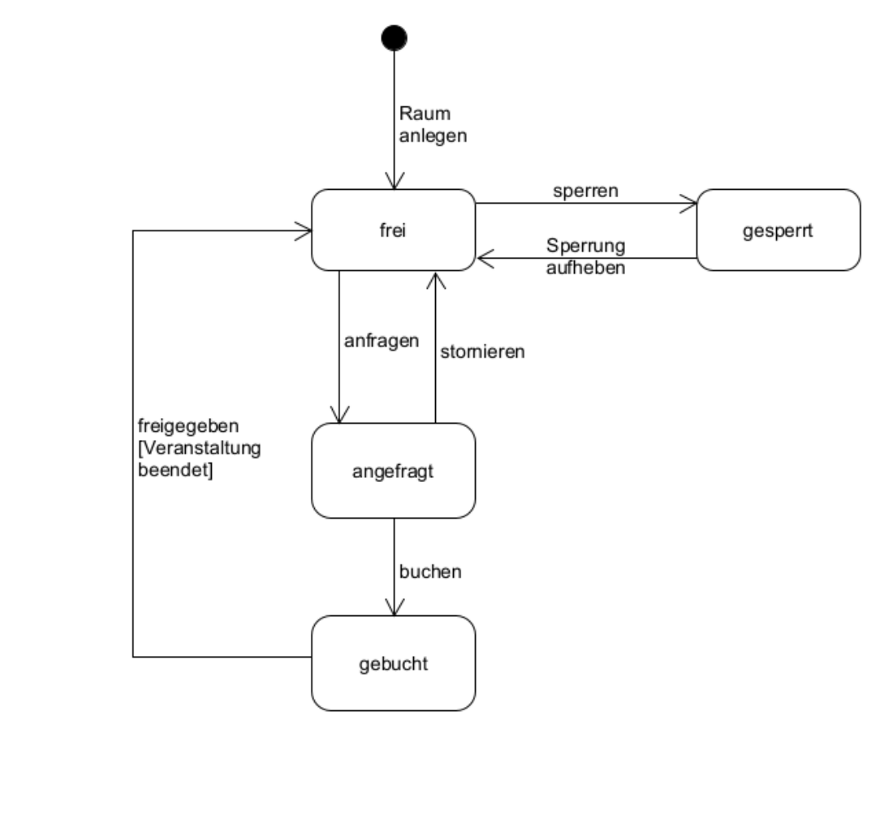
Quelle: Lehrmaterial „Zustandsdiagramm" · Transitionen beschriftet mit dem auslösenden Ereignis.
✍️ Übungen mit Lösung
Übung 1 · Ampel der „BesucherApp"
Eine Ampel zeigt die Auslastung an: Grün = unter 50 %, Orange = 50 % bis 80 %, Rot = über 80 %. Die Ampel wird anhand der Auslastung regelmäßig aktualisiert. Erstelle ein Zustandsdiagramm.
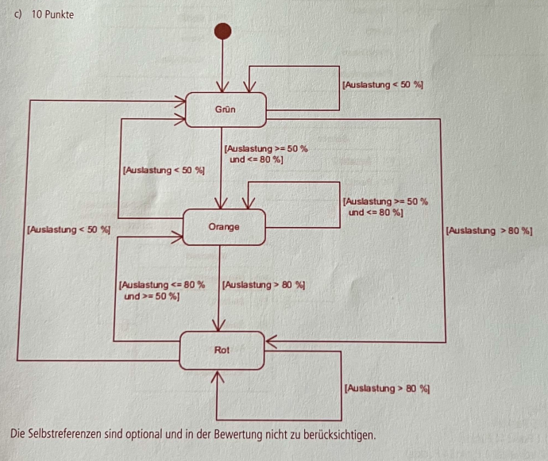
Zustände: Grün, Orange, Rot. Transitionen beim Ereignis „aktualisieren" mit Guards: [Auslastung < 50 %] → Grün, [50–80 %] → Orange, [> 80 %] → Rot. Selbstübergänge (gleiche Stufe bleibt) sind optional und werden nicht bepunktet.
Übung 2 · Lichtsteuerung (Flur-Controller)
Der Controller kennt die Zustände wartend, auto, manuell, zeitgesteuert. Initial wartend (Licht aus). Sensoren erkennen Personen → auto (Licht an). Keine Personen mehr im Zustand auto → zeitgesteuert. Innerhalb der Zeitspanne wieder Personen → zurück zu auto; sonst → wartend (Licht aus). Im Zustand auto kann eine Person das Licht manuell einschalten → manuell. Im Zustand manuell kann das Licht von einer Person ausgeschaltet werden → wartend; werden keine Personen mehr erfasst → zeitgesteuert.
ℹ️
Hinweis: Für diese Aufgabe liegt kein offizieller Lösungsschlüssel im Material vor - die folgende Lösung ist selbst erarbeitet und nach dem Aufgabentext aufgebaut.
Zustände & Transitionen (Trigger / Aktion):
Start → wartend (entry / Licht aus)
wartend — Person erkannt → auto (entry / Licht an)
auto — keine Person → zeitgesteuert
auto — manuell eingeschaltet → manuell (entry / Licht an)
zeitgesteuert — Person erkannt [innerhalb Zeitspanne] → auto
zeitgesteuert — Zeit abgelaufen / keine Person → wartend (entry / Licht aus)
manuell — keine Person mehr erfasst → zeitgesteuert
Übung 3 · Auslastung der Bahnen
Zustände leer, niedrig, normal, hoch. Bei Fahrtbeginn bzw. wenn alle ausgestiegen sind (0 %) ist die Bahn leer; eine leere Bahn kann die Fahrt beenden (Endzustand). Beim Verlassen jeder Haltestelle wird beim Ereignis Abfahrt die Auslastung geprüft: niedrig = bis 30 %, normal = über 30 % und unter 70 %, hoch = ab 70 %. Übergänge zwischen leer und normal bzw. hoch werden zur Vereinfachung nicht berücksichtigt.
ℹ️
Hinweis: Für diese Aufgabe liegt kein offizieller Lösungsschlüssel im Material vor - die folgende Lösung ist selbst erarbeitet.
Zustände & Transitionen (Ereignis Abfahrt mit Guard):
normal ⇄ hoch über Abfahrt mit den jeweiligen Guards; aus normal/hoch bei [bis 30 %] → niedrig
💡
Schlüssel ist, dass jede Transition durch das Ereignis Abfahrt mit einem eindeutigen Guard ([Prozentbereich]) ausgelöst wird.
🏗️ Klassendiagramm (Class)
Das wichtigste Strukturdiagramm: es zeigt den statischen Bauplan - welche Klassen es gibt, ihre Attribute und Methoden und wie sie miteinander in Beziehung stehen.
Bausteine
Klasse 3 Felder
Rechteck mit drei Bereichen: Name, Attribute, Methoden.
Abstrakte Klasse {abstract}
Kursiver Name bzw. {abstract}. Kann nicht instanziiert werden; abstrakte Methoden ebenfalls kursiv.
Interface «interface»
Klasse mit Stereotyp «interface». Eine reine Schnittstelle - legt Methoden fest, ohne sie auszuprogrammieren.
Notiz Kommentar
Blatt mit Eselsohr, per gestrichelter Linie angeheftet - ein erklärender Kommentar.
Beziehungen (Pfeile)
Vererbung ist ein
Durchgezogene Linie + leeres Dreieck zur Oberklasse. „Sparkonto ist ein Konto".
Implementierung Realisierung
Gestrichelte Linie + leeres Dreieck zum Interface. Die Klasse erfüllt dessen Schnittstelle.
Assoziation kennt
Durchgezogene Linie mit Multiplizitäten (1, *, 0..1, 1..*): „kennt/nutzt".
Gerichtete Assoziation Navigierbarkeit
Linie mit offener Pfeilspitze - die Beziehung ist nur in eine Richtung navigierbar.
Aggregation besteht aus
Leere Raute am Ganzen. Lockere Teil-Ganzes-Beziehung: das Teil überlebt das Ganze (Abteilung ◇— Mitarbeiter).
Komposition fest
Gefüllte Raute am Ganzen. Feste Teil-Ganzes-Beziehung: das Teil stirbt mit dem Ganzen (Gebäude ◆— Raum).
Syntax & Sichtbarkeiten
Attribut
Sichtbarkeit name : Typ {Eigenschaften}
- saldo : double
+ name : String
Raute-Merksatz:leer = lockere Bindung (Aggregation), gefüllt = feste Bindung (Komposition). Die Raute sitzt immer am Ganzen. Dreieck = Vererbung/Implementierung und zeigt immer zur Oberklasse bzw. zum Interface.
🧭
Hinweis: Zum Klassendiagramm liegen im aktuellen Übungsmaterial keine eigenen Aufgaben - die Notation hier deckt aber den vollständigen IHK-Umfang 2024 zum Nachzeichnen ab.
⏱️ Sequenzdiagramm (Sequence)
Zeigt den zeitlichen Ablauf des Nachrichtenaustauschs zwischen Objekten. Die Zeit läuft von oben nach unten entlang der Lebenslinien; jede Nachricht ist ein Pfeil von Sender zu Empfänger.
Komplette Notation
Lebenslinie Lifeline
Objektkopf (:Klasse) mit gestrichelter Linie nach unten - die Existenz des Objekts über die Zeit.
Aktivierung Ausführung
Schmaler Balken auf der Lebenslinie - das Objekt ist gerade aktiv (führt etwas aus).
Synchrone Nachricht Aufruf
Durchgezogener Pfeil, gefüllte Spitze. Der Sender wartet auf das Beenden des Aufrufs (Rückgabewert möglich).
Rückgabe Return
Gestrichelter Pfeil, offene Spitze, zurück zum Sender - das Ergebnis eines synchronen Aufrufs.
Asynchrone Nachricht Signal
Durchgezogener Pfeil, offene Spitze. Der Sender wartet nicht auf eine Antwort und arbeitet sofort weiter.
Objekt erzeugen create
Gestrichelter Pfeil «create» auf den Kopf eines neuen Objekts (Objekt-Konstruktion).
Objekt zerstören destroy
Großes X am Ende der Lebenslinie - das Objekt wird zerstört (Objekt-Destruktion).
Kombiniertes Fragment alt/opt/loop
Rahmen mit Tab.alt = Alternative (if/else), opt = optional (if), loop = Schleife - Bedingung in [eckigen Klammern].
Notations-Regeln
Zeit läuft nach unten - die Reihenfolge der Nachrichten ist ihre zeitliche Abfolge.
Die Rückgabe ist ein gestrichelter Pfeil zurück zum Aufrufer (optional, nur bei synchronen Aufrufen sinnvoll).
«create» erzeugt ein Objekt (Pfeil auf den Objektkopf), das X zerstört es.
alt/opt/loop klammern Nachrichtenfolgen, die nur unter einer Bedingung bzw. wiederholt ablaufen.
🧭
Hinweis: Zum Sequenzdiagramm liegen im aktuellen Übungsmaterial keine eigenen Aufgaben - die Notation hier entspricht dem vollständigen IHK-Umfang 2024.